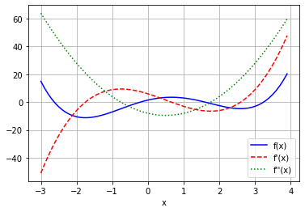
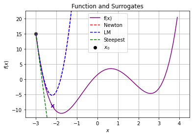
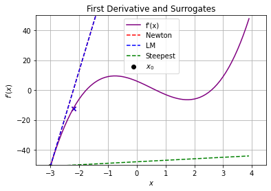
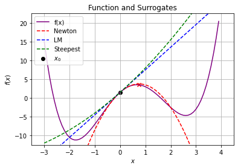
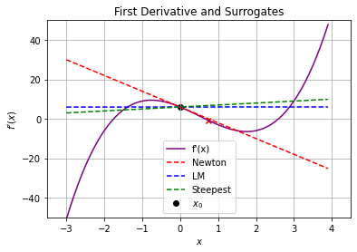
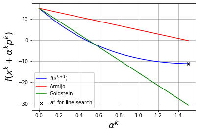
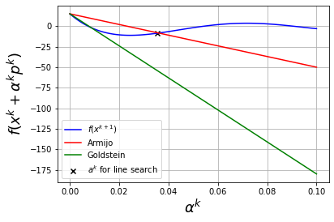
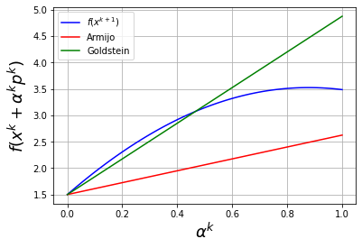
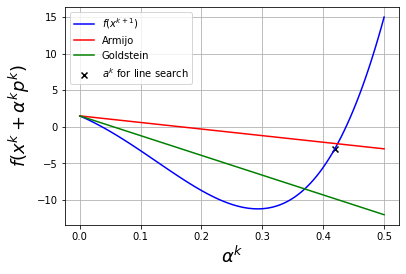

Descent and Globalization
Contents
3.6. Descent and Globalization#
import matplotlib.pyplot as plt
import numpy as np
3.6.1. Define Test Function and Derivatives#
Let’s get started by defining a test function we will use throughout the notebook.
Consider a scalar function \(f(x): \mathbb{R} \rightarrow \mathbb{R}\) to allow for easier visualization. Let
## Define f(x)
f = lambda x : 0.5*(x-1)**4 + (x+1)**3 - 10*x**2 + 5*x
## Define f'(x)
df = lambda x : 6 - 8*x - 3*x**2 + 2*x**3
## Define f''(x)
ddf = lambda x : -8 - 6*x + 6*x**2
plt.figure()
xplt = np.arange(-3,4,0.1)
fplt = f(xplt)
dfplt = df(xplt)
ddfplt = ddf(xplt)
plt.plot(xplt, fplt, label="f(x)", color="b", linestyle="-")
plt.plot(xplt, dfplt, label="f'(x)", color="r", linestyle="--")
plt.plot(xplt, ddfplt, label="f''(x)", color="g", linestyle=":")
plt.xlabel("x")
plt.legend()
plt.grid()
plt.show()

3.6.2. Geometric Insights into Newton Steps#
3.6.2.1. Motivation#
We can interpret Newton-type methods for unconstrained optimization as root finding of \(\nabla f(x) = 0\).
At iteration \(k\), we assemble an approximation to \(f(x)\) using a Taylor series expansion:
and solve for \(p^k\) such that \(f(x^k + p^k)=0\). This gives:
The choice of \(B^k\) determines the algorithm classification:
Pure Newton Method, \(B^k = \nabla^2 f(x^k)\)
Steepest Descent, \(B^k = \frac{1}{\alpha} I\), where scalar \(\alpha\) is sometimes known as the dampening factor
Levenberg-Marquart, \(B^k = \nabla^2 f(x^k) + \delta I\), where scalar \(\delta\) is chosen to ensure \(B^k\) is positive definite.
Broyden Methods, \(B^{k}\) is approximated using history of gradient evaluations, i.e., \(\nabla f(x^0), ... \nabla f(x^k)\). We will study the SR1 and BFGS formulas in this family of methods.
This section explores how choosing \(B^k\) impacts the shape of the approximation and calculated step.
3.6.2.2. Compute and Plot Steps#
Define a function that:
Computes the i. Newton, ii. Levenberg-Marquardt and iii. Steepest Descent Step for a given starting point \(x_0\)
Plots the step in terms of \(f(x)\) and \(f'(x)\)
def calc_step(x0, epsLM):
# Evaluate f(x0), f'(x0) and f''(x0)
f0 = f(x0)
df0 = df(x0)
ddf0 = ddf(x0)
print("x0 = ",x0)
print("f(x0) =",f0)
print("f'(x0) =",df0)
print("f''(x0) =",ddf0)
### Calculate steps
# Newtwon Step
xN = x0 - df0 / ddf0
print("\n### Newton Step ###")
print("xN = ",xN)
print("pN = xN - x0 = ",xN - x0)
f_xN = f(xN)
print("f(xN) = ",f_xN)
print("f(xN) - f(x0) = ",f_xN - f0)
# Levenberg-Marquardt Step
# Recall the eigenvalue of a 1x1 matrix is just that value
dffLM = np.amax([ddf0, epsLM])
xLM = x0 - df0 / dffLM
print("\n### Levenberg-Marquardt Step ###")
print("xLM = ",xLM)
print("pLM = xLM - x0 = ",xN - x0)
f_xLM = f(xLM)
print("f(xLM) = ",f_xLM)
print("f(xLM) - f(x0) = ",f_xLM - f0)
# Steepest Descent Step
xSD = x0 - df0 / 1
print("\n### Steepest Descent Step ###")
print("xSD = ",xSD)
print("pSD = xSD - x0 = ",xSD - x0)
f_xSD = f(xSD)
print("f(xSD) = ",f_xSD)
print("f(xSD) - f(x0) = ",f_xSD - f0)
### Plot Surrogates on x vs f(x)
### Plot f(x)
plt.figure()
plt.scatter(x0,f0,label="$x_0$",color="black")
plt.plot(xplt, fplt, label="f(x)",color="purple")
### Plot approximation for Newton's method
fN = lambda x : f0 + df0*(x - x0) + 0.5*ddf0*(x-x0)**2
plt.plot(xplt, fN(xplt),label="Newton",linestyle="--",color="red")
plt.scatter(xN, f(xN),color="red",marker="x")
### Plot approximation for LM
fLM = lambda x : f0 + df0*(x-x0) + 0.5*dffLM*(x-x0)**2
plt.plot(xplt, fLM(xplt),label="LM",linestyle="--",color="blue")
plt.scatter(xLM, f(xLM),color="blue",marker="x")
### Plot approximation for SD
fSD = lambda x : f0 + df0*(x-x0) + 0.5*(x-x0)**2
plt.plot(xplt, fSD(xplt),label="Steepest",linestyle="--",color="green")
plt.scatter(xSD, f(xSD),color="green",marker="x")
#plt.plot([x0, xLM],[f0, f(xLM)],label="LM",color="green",marker="o")
#plt.plot([x0,xSD],[f0,f(xSD)],label="Steepest",color="blue",marker="s")
plt.xlim((-3.5,4.5))
plt.ylim((-12.5,22.5))
plt.xlabel("$x$")
plt.ylabel("$f(x)$")
plt.legend()
plt.title("Function and Surrogates")
plt.grid()
plt.show()
### Plot Surrogates on x vs f(x)
plt.figure()
plt.scatter(x0,df0,label="$x_0$",color="black")
plt.plot(xplt, dfplt, label="f'(x)",color="purple")
### Plot approximation for Newton's method
dfN = lambda x : df0 + ddf0*(x-x0)
plt.plot(xplt, dfN(xplt),label="Newton",linestyle="--",color="red")
plt.scatter(xN, df(xN),color="red",marker="x")
### Plot approximation for LM
dfLM = lambda x : df0 + dffLM*(x-x0)
plt.plot(xplt, dfLM(xplt),label="LM",linestyle="--",color="blue")
plt.scatter(xLM, df(xLM),color="blue",marker="x")
### Plot approximation for SD
dfSD = lambda x : df0 + (x-x0)
plt.plot(xplt, dfSD(xplt),label="Steepest",linestyle="--",color="green")
plt.scatter(xSD, df(xSD),color="green",marker="x")
plt.xlim((-3.5,4.5))
plt.ylim((-50,50))
plt.xlabel("$x$")
plt.ylabel("$f'(x)$")
plt.legend()
plt.title("First Derivative and Surrogates")
plt.grid()
plt.show()
3.6.2.3. Consider \(x_0 = -3\)#
calc_step(-3,1E-2)
x0 = -3
f(x0) = 15.0
f'(x0) = -51
f''(x0) = 64
### Newton Step ###
xN = -2.203125
pN = xN - x0 = 0.796875
f(xN) = -8.660857647657394
f(xN) - f(x0) = -23.660857647657394
### Levenberg-Marquardt Step ###
xLM = -2.203125
pLM = xLM - x0 = 0.796875
f(xLM) = -8.660857647657394
f(xLM) - f(x0) = -23.660857647657394
### Steepest Descent Step ###
xSD = 48.0
pSD = xSD - x0 = 51.0
f(xSD) = 2534689.5
f(xSD) - f(x0) = 2534674.5


Discussion
In this case, do we expect the Newton and LM steps to be the same? Explain.
Why does \(f(x)\) increase with a steepest descent (\(B^k = I\)) step? I thought the main idea was that because \(B^k\) is positive definite the step is in a descent direction!
3.6.2.4. Consider \(x_0 = 0\)#
calc_step(0,1E-2)
x0 = 0
f(x0) = 1.5
f'(x0) = 6
f''(x0) = -8
### Newton Step ###
xN = 0.75
pN = xN - x0 = 0.75
f(xN) = 3.486328125
f(xN) - f(x0) = 1.986328125
### Levenberg-Marquardt Step ###
xLM = -600.0
pLM = xLM - x0 = 0.75
f(xLM) = 65014556401.5
f(xLM) - f(x0) = 65014556400.0
### Steepest Descent Step ###
xSD = -6.0
pSD = xSD - x0 = -6.0
f(xSD) = 685.5
f(xSD) - f(x0) = 684.0


Discussion
Why does \(f(x)\) increase for all of the steps?
Explain Newton-type method in the context of root finding for \(\nabla f(x) = 0\) using the second plot.
3.6.2.5. Descent Properties#

3.6.3. Line Search#
Excerpts from Section 3.4 in Biegler (2010).


3.6.3.1. Visualization Code#
Goal: Visualize Amijo and Goldstein conditions for an example.
def plot_alpha(xk,eta_ls=0.25,algorithm="newton",alpha_max=1.0):
'''
Calculate step and visualize line search conditions
Arguments:
xk : initial point (required)
eta_ls : eta in Goldstein-Armijo conditions
algorithm : either "newton" or "steepest-descent"
alpha_max : plots alpha between 0 and alpha_max
Returns:
Nothing
Creates:
Plot showing function value and line search conditions as a function of alpha
'''
fxk = f(xk)
dfxk = df(xk)
if(algorithm == "newton"):
pk = - dfxk / ddf(xk)
elif algorithm == "steepest-descent":
pk = - dfxk
else:
print("algorithm argument must be either 'newton' or 'steepest-descent'")
print("Considering xk =",xk,"and f(xk) = ",fxk)
print("Step with",algorithm,"algorithm:")
print("pk = ",pk)
print("With full step, xk+1 =",pk + xk,"and f(xk+1) =",f(xk + pk))
n = 100
alpha = np.linspace(0,alpha_max,n)
fval = np.zeros(n)
for i in range(0,n):
fval[i] = f(xk + alpha[i]*pk)
fs = 18
plt.figure()
# Evaluate f(x^{k+1}) for different alpha values
plt.plot(alpha,fval,color="blue",label=r"$f(x^{k+1})$")
# Armijo condition
arm = np.zeros(n)
for i in range(0,n):
arm[i] = fxk + eta_ls*alpha[i]*dfxk*pk
plt.plot(alpha,arm,color="red",label="Armijo")
# Goldstein condition
gold = np.zeros(n)
for i in range(0,n):
gold[i] = fxk + (1-eta_ls)*alpha[i]*dfxk*pk
plt.plot(alpha,gold,color="green",label="Goldstein")
# Apply backtracking linestep (starting with alpha = alpha_max)
i = n - 1
flag = True
failed = False
while flag:
if i < n-1 and fval[i] < gold[i]:
flag = False
print("Line search failed. Goldstein conditions violated. Consider increasing alpha_max.")
failed = True
# Armijo condition
if fval[i] < arm[i]:
flag = False
else:
i = i - 1
if i < 0:
print("Line search failed. Try decreasing alpha_max.")
failed = True
if not failed:
print("alphak =",alpha[i],"with backtracking line search starting at alpha =",alpha_max)
print("f(xk + alphak*pk) =",fval[i])
plt.scatter(alpha[i],fval[i],marker='x',color='black',label=r"$a^{k}$ for line search")
# Labels
plt.xlabel(r"$\alpha^k$",fontsize=fs)
plt.ylabel(r"$f(x^k + \alpha^k p^k)$",fontsize=fs)
plt.grid()
plt.legend()
plt.show()
3.6.3.2. Newton Step, \(x^k = -3\)#
plot_alpha(-3,eta_ls=0.25,algorithm="newton",alpha_max=1.5)
Considering xk = -3 and f(xk) = 15.0
Step with newton algorithm:
pk = 0.796875
With full step, xk+1 = -2.203125 and f(xk+1) = -8.660857647657394
alphak = 1.5 with backtracking line search starting at alpha = 1.5
f(xk + alphak*pk) = -11.1743426900357

Discussion
Why did the backtracking line search stop at \(\alpha^k = \)
alpha_max?Is it possible to find a larger improvement in \(f(x)\) with \(\alpha^k > 1\)?
3.6.3.3. Steepest Descent Step, \(x^k = -3\)#
plot_alpha(-3,eta_ls=0.25,algorithm="steepest-descent",alpha_max=1E-1)
Considering xk = -3 and f(xk) = 15.0
Step with steepest-descent algorithm:
pk = 51
With full step, xk+1 = 48 and f(xk+1) = 2534689.5
alphak = 0.03535353535353535 with backtracking line search starting at alpha = 0.1
f(xk + alphak*pk) = -8.67145500733185

Discussion
Why did the line search stop where the Armijo conditions are satisfied?
Why not further decrease \(\alpha^k\) to achieve a greater improvement in the objective?
3.6.3.4. Newton Step, \(x^k = 0\)#
plot_alpha(0,eta_ls=0.25,algorithm="newton",alpha_max=1.0)
Considering xk = 0 and f(xk) = 1.5
Step with newton algorithm:
pk = 0.75
With full step, xk+1 = 0.75 and f(xk+1) = 3.486328125
Line search failed. Goldstein conditions violated. Consider increasing alpha_max.

Discussion
Why does the line search fail?
How could we modify Newton’s method to improve robustness?
3.6.3.5. Steepest Descent Step, \(x^k = 0\)#
plot_alpha(0,eta_ls=0.25,algorithm="steepest-descent",alpha_max=5E-1)
Considering xk = 0 and f(xk) = 1.5
Step with steepest-descent algorithm:
pk = -6
With full step, xk+1 = -6 and f(xk+1) = 685.5
alphak = 0.4191919191919192 with backtracking line search starting at alpha = 0.5
f(xk + alphak*pk) = -2.9749848430038526

Discussion
How does the region where the Armijo and Goldstein conditions are satisfied change for different values of
eta_ls?
3.6.4. Trust Regions#
Excerpts from Section 3.5 in Biegler (2010).
3.6.4.1. Main Idea and General Algorithm#


3.6.4.2. Trust Region Variations#

\(p^C\): Cauchy step
\(p^N\): Newton step
3.6.4.2.1. Levenburg-Marquardt#

3.6.4.2.2. Powell Dogleg#